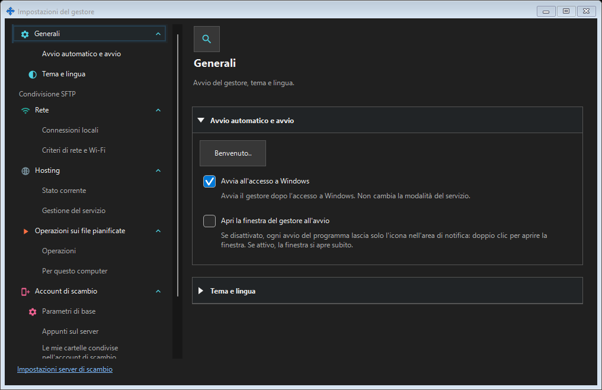
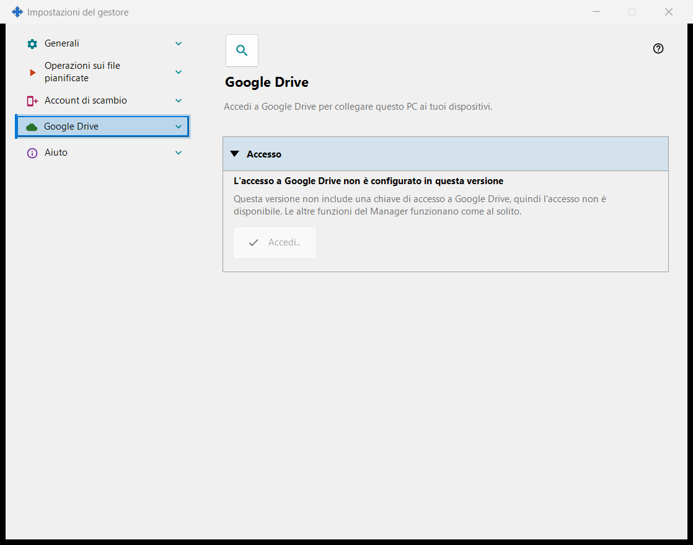
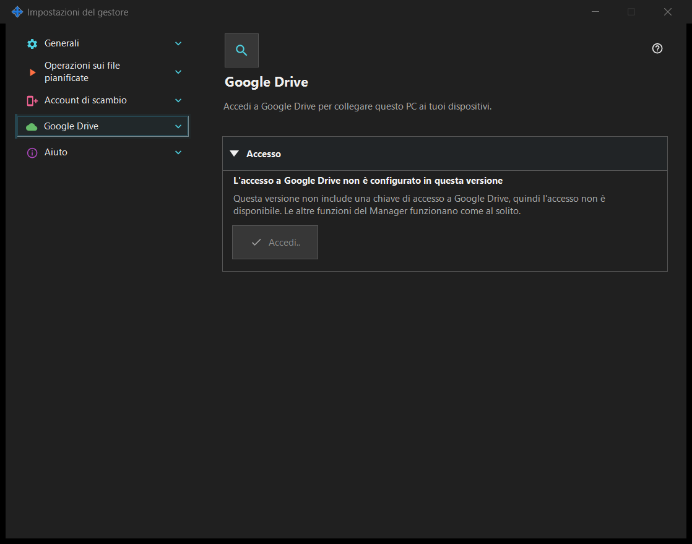

Impostazioni del gestore
Impostazioni del gestore
Scopo
Avvio, tema, lingua, account remoto, pubblicazione, appunti e operazioni pianificate appartengono al gestore e non richiedono un server locale. Se il componente di condivisione SFTP è installato, le sue pagine formano un gruppo in questa finestra.


In questo ordine
Aprire dal menu dell’area di notifica o dai collegamenti dei componenti. Aprire e chiudere non avvia né arresta alcun server. L’accesso remoto non richiede il server locale.
Gli elementi
Impostazioni del gestore
Avvio, tema, lingua, account remoto, pubblicazione, appunti e operazioni pianificate appartengono al gestore e non richiedono un server locale. Se il componente di condivisione SFTP è installato, le sue pagine formano un gruppo in questa finestra. Aprire dal menu dell’area di notifica o dai collegamenti dei componenti. Aprire e chiudere non avvia né arresta alcun server. L’accesso remoto non richiede il server locale.
Impostazioni del gestore
Avvio, tema, lingua, account remoto, pubblicazione, appunti e operazioni pianificate appartengono al gestore e non richiedono un server locale. Se il componente di condivisione SFTP è installato, le sue pagine formano un gruppo in questa finestra. Aprire dal menu dell’area di notifica o dai collegamenti dei componenti. Aprire e chiudere non avvia né arresta alcun server. L’accesso remoto non richiede il server locale.
Google Drive
- Apri Share Manager, apri «Impostazioni del gestore» e scegli la pagina «Google Drive». Servono un account Google e una connessione a internet. L'app Google Drive per Windows non serve e non devi creare tu alcun progetto, chiave o impostazione di Google.
- Premi «Accedi..». Il browser predefinito apre la pagina di Google: scegli l'account, accedi lì e conferma l'accesso mostrato. La password si digita solo nella pagina di Google, mai in questa applicazione. Lì puoi anche annullare l'accesso o rifiutare l'autorizzazione; in tal caso non viene salvato nulla.
- Torna a Share Manager: la riga in grassetto mostra «Accesso a Google Drive effettuato» e puoi chiudere la scheda del browser. Se il browser non si è aperto, controlla il browser predefinito e premi di nuovo «Accedi..». Se il browser mostra un errore o la pagina continua a mostrare «In attesa dell'accesso nel browser..», premi «Annulla» e accedi di nuovo. L'accesso resta su questo PC: dopo la chiusura di Share Manager, la disconnessione da Windows o il riavvio del PC, l'accesso viene riutilizzato senza il browser, finché Google mantiene valida l'autorizzazione.
- Per effettuare lo scambio con un altro dispositivo, accedi anche lì, con lo stesso account Google, nella pagina Google Drive di quel dispositivo: su un altro PC nel suo Share Manager, su un telefono nell'app per Android. I dispositivi con accesso a account Google diversi non si vedono tra loro ed entrambi i dispositivi richiedono una versione dell'applicazione con la pagina Google Drive. L'accesso da solo non trasmette nulla: ciò che passa tramite Google Drive è descritto nella guida degli appunti, delle operazioni pianificate e del gruppo «Coda su Google Drive».
- L'applicazione richiede solo l'accesso alla propria cartella nascosta sul tuo Google Drive (ambito drive.appdata). Non vede, non sfoglia e non sincronizza gli altri tuoi file su Google Drive e non riceve né indirizzo e-mail né dati del profilo. Ciò che i tuoi dispositivi si passano occupa spazio sul tuo Google Drive; il gruppo «Coda su Google Drive» lo mostra e permette di eliminare un pacchetto. «Esci da questo dispositivo» elimina i record di questo PC dalla cartella nascosta, revoca l'accesso presso Google ed elimina l'accesso memorizzato su questo PC. Google può quindi terminare l'accesso anche sui tuoi altri dispositivi con lo stesso account; se uno di essi segnala che il suo accesso non funziona più, accedi di nuovo lì. Per collegare di nuovo questo PC, premi «Accedi..».
- Se qualcosa non va, la riga sotto lo stato dice cosa è successo. Nessuna connessione o errore di Google: l'applicazione riprova da sola, non devi fare nulla. Accesso annullato o autorizzazione negata: premi di nuovo «Accedi..» quando vuoi. Account gestito da un'organizzazione il cui amministratore blocca l'applicazione: accedi con un altro account Google o rivolgiti all'amministratore. Messaggio che l'accesso non funziona più: l'autorizzazione è stata revocata o è scaduta, premi di nuovo «Accedi..». Nessuno spazio libero sul tuo Google Drive: libera spazio o elimina pacchetti dalla coda. Limite giornaliero di caricamento: attendi il giorno successivo. «L'accesso a Google Drive non è configurato in questa versione» o un messaggio che la chiave di accesso di questa installazione non è più accettata: installa la versione attuale dell'applicazione dal sito ufficiale; le altre funzioni di Share Manager funzionano nel frattempo.
Qui questo PC accede al tuo account Google, così che l'applicazione possa usare la propria cartella nascosta privata sul tuo Google Drive. Premi «Accedi..»: si apre il browser predefinito, confermi l'accesso presso Google e Google restituisce la risposta a questo PC tramite un indirizzo locale; poi puoi chiudere la scheda del browser. L'unica autorizzazione richiesta è l'accesso alla cartella nascosta dell'applicazione sul tuo Google Drive (ambito drive.appdata): l'applicazione non può vedere nessun altro file sul tuo Google Drive e non riceve né indirizzo e-mail né dati del profilo. Se Google concede un accesso diverso da quello richiesto, l'accesso viene rifiutato. La riga in grassetto mostra lo stato. «Accesso a Google Drive non effettuato»: «Accedi..» è disponibile; se l'autorizzazione è stata revocata o è scaduta, lo dice la riga sotto, che invita ad accedere di nuovo. «In attesa dell'accesso nel browser..»: completa l'accesso nel browser oppure premi «Annulla». «Accesso a Google Drive effettuato»: questo PC è collegato al tuo Google Drive e ne vengono mostrati il nome e l'identificatore breve. «Google Drive al momento non è disponibile»: la riga sotto indica il motivo - nessuna connessione, limite giornaliero di caricamento raggiunto, nessuno spazio libero sul tuo Google Drive o un errore di Google; senza connessione o in caso di errore l'applicazione riprova da sola. «Uscita da Google Drive..» compare finché l'uscita è in corso. «Esci da questo dispositivo» pone una sola domanda, con risposta predefinita «No». Dopo «Sì» revoca l'accesso presso Google, elimina i record di questo PC dalla cartella nascosta sul tuo Google Drive ed elimina il token di accesso memorizzato su questo PC; una riga sotto i pulsanti indica quanti record sono stati eliminati oppure che Google non ha confermato la revoca, che puoi allora eseguire nelle impostazioni dell'account Google. In una versione senza chiave di accesso Google la pagina mostra «L'accesso a Google Drive non è configurato in questa versione», «Accedi..» è disattivato e le altre funzioni del Manager funzionano come al solito. Finché questo PC ha effettuato l'accesso, i comandi degli appunti di Share Manager funzionano anche tramite Google Drive, un'operazione pianificata può usare «Tramite Google Drive» come origine o destinazione e l'elenco delle risorse del visualizzatore mostra le cartelle che gli altri tuoi dispositivi pubblicano lì. Il gruppo «Coda su Google Drive» mostra ciò che i tuoi dispositivi si passano e quanto spazio occupa; seleziona un pacchetto e premi «Elimina pacchetto» per rimuoverlo dal tuo Google Drive. Tramite Google Drive, i file e gli appunti sono conservati nel tuo account Google, come gli altri tuoi file su Google Drive; non partecipa alcun server di scambio.


Impostazioni del gestore
Avvio, tema, lingua, account remoto, pubblicazione, appunti e operazioni pianificate appartengono al gestore e non richiedono un server locale. Se il componente di condivisione SFTP è installato, le sue pagine formano un gruppo in questa finestra. Aprire dal menu dell’area di notifica o dai collegamenti dei componenti. Aprire e chiudere non avvia né arresta alcun server. L’accesso remoto non richiede il server locale.
Impostazioni del gestore
In Aiuto / Informazioni scegli Esporta registri per l'analisi. Raccoglie tutti i registri locali conservati di Media Exchange Server, SFTP, installazione e strumenti ausiliari, gestore e visualizzatore, anche a server arrestati. Non scarica registri remoti. I segreti vengono rimossi; origini troncate, omesse o illeggibili sono elencate nella verifica e rendono l'archivio parziale. Invia all'autore apre una bozza con lo ZIP verificato allegato; decidi tu se inviare. Se l'allegato non funziona, aggiungi lo ZIP manualmente. Mostra in Esplora file seleziona lo ZIP: copialo e incollalo nella cartella desiderata. In caso di errore puoi selezionare e copiare il percorso nella verifica. L'archivio resta dopo la visualizzazione o una richiesta di posta, anche annullando il messaggio. Annulla prima di queste azioni lo elimina. Una successiva esportazione elimina gli archivi inutilizzati più vecchi di sette giorni; copia lo ZIP per conservarlo più a lungo. Oltre 20 MiB resta disponibile Esplora file, senza invio alla posta.
Impostazioni server di scambio
Impostazioni del gestore · Impostazioni condivisione SFTP · Impostazioni server di scambio